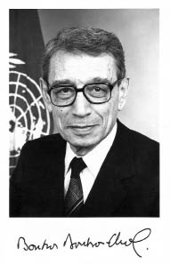

BOUTROS BOUTROS-GHALI
Boutros Boutros-Ghali (14 Kasım 1922, Kahire) 1 Ocak 1992'de Birleşmiş Milletler'in altıncı genel sekreteri oldu ve 1996 yılına dek bu görevde kaldı. Atanmasından önce Boutros-Ghali Mısır'da dışişlerinden sorumlu başbakan yardımcısıydı. Diplomat, hukukçu, akademisyen ve çok sayıda eserin yazarı olan Boutros-Ghali'nin dışişlerinde uzun bir deneyimi vardır. 1949 yılında Paris Üniversitesi'nde uluslararası hukuk doktorasını tamamladı. 1979-1991 arasında Uluslararası Hukuk Komisyonu üyesi olan Boutros-Ghali Uluslararası Hukukçular Komisyonu üyeliği de yaptı. Yaklaşık kırk yıl boyunca Boutros-Ghali uluslararası hukuk, insan hakları, ekonomik ve toplumsal gelişme, sömürgesizleşme, Ortadoğu sorunu, uluslararası insan hakları, azınlık hakları (özellikle etnik haklar), bağlantısızlık, Akdeniz bölgesinin gelişimi ve Afrika-Arap işbirliği üzerine çok sayıda komisyonda yer aldı. Kasım 1997'de Boutros Boutros-Ghali Hanoi'de VII. Frankofonlar Zirvesi'nde Frankofonluk Genel Sekreteri seçildi. El Ahram İktisadi'nin kurucusu olarak on beş yıl boyunca başyazarlığını yapan Boutros Boutros-Ghali anılarının ilk cildini kaleme aldı: Le chemin de Jérusalem (Fayard, 1997). 1998 yılında Méditerranée Etranger Ödülü alan bu eser Mısır ile İsrail arasındaki Camp David Anlaşmalarına varan görüşmeleri anlatmaktadır. Ayrıca Mes années à la Maison de verre (Fayard, 1999) adlı eserinde Birleşmiş Milletler'in başındaki deneyimini anlatmaktadır. En attendant la prochaine lune... (Fayard, 2004) adlı eseri ve yakın dönemde de Ortadoğu üzerine Şimon Peres'le söyleşilerini yayımladı (Soixante ans de conflits israélo-arabe, Complexe, 2006).

GHALI
Günümüzde özgürlük kavramı nasıl bir anlam edinmiştir?
Her türlü Avrupa-merkezci özgürlük yaklaşımından uzak durmamız gerektiği kanısındayım, çünkü Avrupa anlayışı özellikle seyahat etme özgürlüğüne ve politik faaliyetlerde bulunabilmeye bağlı. Daha temellere inmek gerekir. Özgürlüğün temeli, günde iki bin kalori alacağından emin olmak, başının üzerinde bir dam ve bir işin olacağından emin olmaktır. Bu temel öğeler olmadan özgürlük anlamdan yoksundur. Özgürlükten söz ederken, dünya nüfusunun üçte birinin asgari miktarda yiyeceğe sahip olmadığı, bir milyar insanın okuma yazma bilmediği ender olarak dikkate alınmaktadır, oysa bu durum onları her türlü vicdan ve bilinç özgürlüğünden, özellikle de okumaktan yoksun bırakmaktadır.
Dünyada insan haysiyetine dair tek bir fikir mi olmalıdır, yoksa geleneklere, kültürlere ve dinlere bağlı olarak farklı haysiyet biçimleri, insan haklarının antropolojik varlık nedeni olarak haysiyet hayal edebilir miyiz?
Haysiyet Üçüncü Dünya ülkelerinde ve özellikle dünyanın benim doğduğum bölümünde sık kullanılan bir sözcüktür. Arapça'da haysiyete kerem denir ve bu sözcük Arap dünyasının en önemli kavramlarından birini belirtmektedir, özellikle de asgari beslenme ve güvenlik koşullarının sağlanmadığı ülkelerde. Bu asgari haysiyet tüm dünyaya uygulanmalı, biçim değişiklikleri sonra dikkate alınmalıdır.
Günümüzün köktencilikleri, bütün karmaşıklıklarıyla seküler ve dinsel milliyetçilikler anti-modernizmin bir biçimi değil midir?
Bir tek değil, birçok köktencilik olduğunu vurgulamak gerekir: Hindu, Hristiyan, Yahudi, Müslüman. Bu köktenciliklerin her biri yabancıyı kabullenmeyi red üzerinde temellenmektedir, ortak özellikleri budur. Bir anlamda, bu köye geri dönüştür. Ben bu sorunu, uydu ve köy diyalektiği diye adlandırıyorum. Sıradan insan, küreselleşmenin sorunlarıyla yüz yüze geldiğinde kendini güvensiz hisseder. Televizyonunu açtığında ve Ruanda'dan jenosit görüntülerini seyrettiğinde, ardından Saraybosna kuşatmasını seyrettiğinde kendini güvensiz hisseder ve tek bir arzu duyar, köyüne, köklerine, ailesine, dinine geri dönmek. Aynı zamanda yabancı karşısında ya da köyüne ait olmayan her şey karşısında temel bir korku duyar. Bu refleks her ülkede farklı biçimler alır ve özellikle tepkisel bir üstünlük duygusunda billurlaşır. Buna paralel olarak bu biçimlerin kendine özgü karmaşıklıkları da vardır, kendi özel mitlerini beslerler. Fransa'da Le Pen var. Amerika Birleşik Devletleri'nde Ku Klux Klan, ama aynı zamanda kendi ülkelerinden dışarı asla adımını atmayan Kongre üyelerinin çoğunluğu. Üçüncü Dünya ülkelerinde bu köktenciler gerçekten de Batı karşıtı bir tutum benimseyeceklerdir.
Bu yeni yüzyılda kültürler ile dinler arasında bir diyalog imkânı var mı? Kültürlerin ve dinlerin "çoklu-evren"iyle, kültürlerin "polilog"uyla örtüşen, kültürleraşırı bir dünya uygarlığı kimliğinin ortaya çıktığını görme şansı kaldı mı?
Bu düzeyde çok sayıda teatide bulunuyorum. Bu yöndeki teşebbüsleri teşvik etmek için dünyanın farklı bölgelerinde gerçek çabalar sergileniyor. Ama gerçek bir diyalogdan uzaktayız. Hâlâ köktenciliklerin ve arkaik fikirlerin doğduğu bir evredeyiz.
Demokrasiler gerçek demokrasi midir? Terimin biçimsel ve politik anlamında değil, teknik uygarlığın eğilimlerine gerçek cevaplar sunan bir sistem anlamında soruyorum.
Ben demokrasinin küreselleşme nedeniyle, daha doğrusu küreselleşmeler nedeniyle tehlikede olduğuna inanıyorum, çünkü bu olgunun çok sayıda biçimiyle karşı karşıyayız: mali küreselleşme, iletişimin küreselleşmesi, turizmin, uyuşturucunun, hastalığın küreselleşmesi. Her küreselleşmenin kendine özgü nitelikleri ve hızı var ve bu küreselleşmeler tek bir devletin, hatta iki devletin bile çözemeyeceği dünya çapındaki sorunların taşıyıcısıdır. Dolayısıyla belki Birleşmiş Milletler, Uluslararası Para Fonu ya da Dünya Bankası gibi uluslararası bir foruma ihtiyacımız var.
Şu an için bu sorunlar demokratik bir şekilde ele alınmamaktadır. Bu sorunlardan sorumlu olanlar açıklamada bulunabilecek konumda değiller. Temel çelişki de burada. Ulusal düzeyde demokrasiyi teşvik ediyoruz, Birleşmiş Milletler içinde departmanlar kuruyoruz, demokrasiyi teşvik eden ve seçim prosedürlerine eşlik eden, partilere para akıtan, iktidarın akılcı kullanımını teşvik eden, insan haklarını koruyan sivil toplum kuruluşları kuruyoruz. Ama uluslararası ölçekte demokrasi yok. Dolayısıyla, ulusal demokrasilerin üzerinde ya da yanında bir dünya demokrasisi kurmazsak ulusal demokrasi tehlikede kalacaktır. Niçin? Çünkü bir sorun ne ölçüde dünya çapındaysa, ulus-devletin rolü de o ölçüde önem yitir, öyle ki sonunda ulusal demokrasi gereksiz hal alabilir. Bu temel çelişkiyi nasıl çözebiliriz? 185 ülkemiz var, onların hudutları içinde demokrasiyi teşvik etmeye çalışıyoruz, ama dünya çapındaki sorunlar, gözümüzün önünde demokratik olmayan yöntemlerle çözümleniyor.
Yaklaşık beş yüzyıldır Batı uygarlığı dünyanın geri kalanına yayılıyor. Günümüzde Batı teknolojisi bu teknolojiyle rekabet imkânlarına sahip olmayan ülkelere kendini dayatmış durumda. Sovyet imparatorluğunun çöküşü ve dünya pazarının büyüyen serbestleşmesiyle birlikte pazar ekonomisinin yayılması ilave bir boyut edindi. Bu eğilimler Latin Amerika, Çin ya da İslam gelenekleri için bir tehlike oluşturmakta mıdır?
Teknolojiye bütün milletlerin sahip olabileceğini ve tek bir halkın tekelinde olmadığını sanıyorum. Ayrıca bir tepkinin gelişmekte olduğunu saptıyorum: Biyolojik çeşitlik kadar önem taşıyan kültürel çeşitliliği korumak için yeni örgütlenmeler kuruluyor. Bengal kaplanlarının soyunun korunmasını savunuyorsak, bir kültür ya da uygarlığın savunulmasını niçin dert etmeyelim?
Bu kültürel çeşitlilik teknolojik homojenleşmenin tehdidi altında değil mi? Özellikle de spekülatif hareketliliği neredeyse anlık bir hal alan ve küreselleşme karşısında, John Kenneth Galbraith ile Joseph Stiglitz'in formüle ettiği anlamda kolektif bir sorumluk yokluğuna eşlik eden sermaye akışları ve elektronik medyanın tehdidi altında değil mi?
Öncelikle, dil, din ve gelenek bakımından çok önemli bir çeşitliliğin varlığına inanıyorum ve kültürel çeşitlilik yitecek diye bir korku duymuyorum. Üstelik önümüzdeki on, on beş yıl içinde yeni aygıtların, özellikle de tercüme yapabilen bilgisayarların ortaya çıkacağı kanısındayım. Anında tercüme yapabilen bu makineler tüm dünya dillerinin çeşitliliğini koruyabileceklerdir. Köy ve uydu diyalektiği de bu şekilde gerçekleşecektir. Küreselleşme dillerin korunmasına yol açacaktır. Bazı bölgeler bağımsızlıklarını arzuladığında eski ülkelerde ayrılıkçı hareketler görülüyor. Bu durum, köyün cazibesinin, diyalektinin, dilinin ve geleneğini korunmasının küreselleşmeye bağlı olduğunu göstermektedir.
Yirminci yüzyıla damgasını vuran devlet adamları kimler?
Öncelikle ve hiç tereddüt etmeden Nelson Mandela'nın adını anabilirim. Bu adam uzlaşmanın koşullarını yaratarak bağışlamayı kurumsallaştırmayı bildi. Ben bu son otuz yıl boyunca apartheid'in kaldırılması mücadelesine katıldım ve bunun, korkunç bir çatışma ve iç savaş pahasına daha
yıllarca süreceğine inanıyorduk. Oysa Nelson Mandela'nın yüce gönüllülüğü, hayalgücü ve cesareti sayesinde çok sakin bir şekilde ortadan kalktı. İkinci olarak, Avrupa'da, 1870, 1914, 1939'daki üç savaşa rağmen, Fransa ve Almanya, devlet başkanları de Gaulle ve Adenauer sayesinde yalnızca uzlaşmayı değil, bu iki ülke arasında barışın kurumlaşmasını da sağlayabildiler. Aynı saptama başkan Sedat ile Begin için de geçerlidir. Son olarak, yüzyıl içinde daha geriye giderek Gandhi'yi sayabilirim.
Yoksulluk ile haysiyetin uyumu, insanın dünyanın hangi bölgesinde bulunduğuna bağlı olarak farklı biçimler mi alır?
Katolik gelenekte yoksul olmak cennete girmeyi sağlar. Zengin olmak cennete girmeyi zorlaştırır. Ben burada yoksulluk tanımı ölçütümü yeniden ele alıyorum. Günde iki bin kalori alabilmek, barınacak bir yeri olmak, kışa dayanabilir olmak. Dünyanın her yerine uygulanabilir bir ölçüt bu asgariden ibarettir ve bu da bir iş sahibi olmaya bağlıdır. Zengin bir ülkede yoksul olmanın yoksul bir ülkede yoksul olmaktan daha güç olup olmadığı sorusuna ise, sorunu tersine çevirerek cevap verebilirim: Yoksulların zenginler arasında yaşamasındansa, zenginlerin yoksullar arasında yaşaması daha güçtür.
Adam Smith'in ve mirasçılarının ifade ettikleri haliyle pazar ekonomisinin ilkelerinin demokratik güçlerin dayanağı olabileceğini düşünüyor musunuz? Pazar gerçekten de finansı düzene sokabilir mi?
Birkaç yıl önce Güney Afrika'da IMF yöneticileriyle bir toplantıya katıldım ve pazar ekonomisinin Üçüncü Dünya'nın yoksul ülkelerinin sorunlarını çözemeyeceği konusunda onları uyardım. Asgari bir altyapı olmaksızın, bir telefon şebekesi olmaksızın, elektrik yokken, yol ağı yokken ya da iyi bir adli idare yokken bu ülkelerde hiçbir yatırım yapılamaz. Ekonomik rekabet dayanışmayla dengelenmelidir, en yoksul ülkelerle olduğu kadar zengin ülkelerin marjinalleşmiş nüfus kesimleriyle de dayanışma gerekir. Bunlar iki yoksulluk türüdür, zengin ülkelerin kıyısındaki ülkelerin yoksulluğu ile zengin toplumların kıyısındaki insanların yoksulluğu.
Mali spekülasyonun önemli oranda artması dünya ekonomisi için bir tehlike değil mi?
Bu spekülasyon pazar ekonomisiyle atbaşı gidiyor. Pazar ekonomisi engellenemez. Spekülasyon beni korkutmuyor, kendi kendini düzeltecektir. Ben daha çok nüfusların, ülkelerin, hatta Afrika gibi bütün bir kıtanın marjinalleşmesinden çekiniyorum. İster bir ülke, bir halk, bir insan kategorisi, isterse de dünyanın yerlileri dediklerim olsun, marjinalleri entegre etmek için ne yapılabilir? Bu sorun uluslararası anlaşmazlıklar düzeyinde kendini gösteriyor. Bu anlaşmazlıklardan bazıları dünya kamuoyunun dikkatini çekiyor. Müdahale ediliyor, bir aracı bulunmaya çalışılıyor, göçmenlere yardım etmek için yabancı yardım geliyor. Buna karşılık, çeşitli nedenlerle, bazı çatışmalar uluslararası kamuoyunun dikkatini çekmiyor. Bunlar benim öksüz çatışmalar dediklerim. Kimse bunları dert etmiyor. Afganistan'ı kim dert ediyor? Uluslararası topluluğun mutlak ilgisizliği karşısında bir buçuk milyon insanın öldüğü Ruanda'yı kim dert ediyor? İnsan yoksulsa, yalnızca dikkat çekmek bile her şeyi değiştirir. Demek ki iki tür yoksulluğumuz var: Üzerinde konuşulan ve dünyanın müdahalesini gerektiren, kimi kararların alınmasına, bazı düzenlemelerin benimsenmesine, bazı yardım programlarının açılmasına yol açan yoksulluk ile kimsenin bilmediği, kimsenin dert etmediği yoksulluk.
Medeniyetler çatışması kaygısı, eski komünizm korkusuyla aynı düzeyde değil midir?
Ben bu analizi paylaşmıyorum. Bu kaygının daha ziyade çokyanlılık sorununa bağlı olduğunu düşünüyorum. 1992 yılında, Kuveyt'in işgalinden ve Irak'a karşı savaşın başarısından sonra, soğuk savaş sonrasını yönetebilecek yeni bir dünya düzenini kurma teşebbüsünün, eğiliminin başladığını gördük. Başkan Baba George Bush bunu yankılar uyandıran bir formülle duyurmuştu. Herkes Birleşmiş Milletler'in çokyanlılığı, yani uluslararası ilişkilerde demokratik bir biçimi inşa edecek forum olmasını bekledi. Bütün önemli aktörler, üye devletler ile devlet olmayan üyeler, tıpkı sivil toplum kuruluşları ve iş çevreleri gibi, soğuk savaş sonrası bu dönemin yönetimine katılırlar. Ve Mogadişu'da Amerikan askerlerinin öldürülmesine bağlı olarak aniden bir değişim meydana gelir. Bu olay, Clinton'ın başkanlığı döneminde cumhuriyetçi olmuş Amerikan senatosunun çoğunluğunun yön değiştirmesine bağlı olarak politik bir değişime yol açtı. Ve bu yeni çoğunluk, bir tür yeni-tecritçilik biçimindeki tekyanlılığı öne çıkartarak, her türlü çokyanlılık teşebbüsünü bertaraf edecek şekilde davrandı. Bu durum eski bir Amerikan geleneğine geri dönüş demekti. Dolayısıyla bu medeniyetler çatışması teorisinin Amerika Birleşik Devletleri'nde her zaman güçlü olan yeni-tecritçilik geleneğine doğrudan bağlı olduğu kanısındayım.
Çokyanlılığı kabul etmek, farklı kültürlerin birlikte yaşamasını kabul etmek demektir. Buna karşılık, çokyanlılığın reddi bütün sorunların tek bir süpergüç tarafından çözülmesi gerektiğine inanılması anlamına gelir. Uygulamada bu tutum çatışmayı teşvik etmektir.
O halde, Princeton'dan Profesör Kenan gibi kimi gözlemcilerin tezini paylaşmıyorsunuz. Onlara göre Amerika bir süpergüç olmaya son verirse dünya çapında kargaşa çıkar. Evrenselciliğin tehlikesi nedir? Yirmi birinci yüzyılda çokkutuplu bir dünyanın önemi nedir?
Amerikan tutumunun mantığını elbette anlayabilirim. Amerika'nın konumu nedir? Yöneticileri dünyanın bütün sorunlarına karışma hakları olduğunu düşünmekle kalmayıp, dahası, bazı sorunların onların yokluğunda çözümlenmesine de tahammül edemiyorlar. Bu politikanın altındaki mantık nedir? Amerikalılar şöyle diyor: "Varsayalım ki bir grup Avrupalı arabulucu krizi çözmeye çalışıp başarısız kalsın, o zaman bizden müdahale talep edecekler ve biz de karışmış olacağız. Bu durumda, madem karışacağız, daha baştan arabulucu olalım." Bu nedenle, kendi onayları olmadan, hayır duaları olmadan herhangi bir arabuluculuğa izin vermiyorlar; çünkü yenilgi durumunda, kimse sorunu çözemeyecek ve onlar müdahale etmek zorunda kalacaklar. Bu mantık bana çok tehlikeli geliyor. Nedeni de gayet basit: Mutlak iktidar yozlaştırır, mutlak anlamda yozlaştırır. Dolayısıyla, en başta Amerika olmak üzere, çokyanlılığa ihtiyacımız var, dünya çapındaki sorunları diğer aktörlerle birlikte tartışmaya ihtiyacımız var.
Amerika'nın bu tutumu, Amerika Birleşik Devletleri'nin haklı görülemeyecek "şeytanileştirilme"sine başvurmadan, kültürlerin çeşitliliğine karşı değil mi?
Gerçekten de kültürel çeşitliliğe karşı olabilir, ama daha kötüsü, ABD'nin çıkarlarına da ters. Öncelikle, onların kamuoyu dünyanın jandarması rolü oynamaya hazır değil. İkinci olarak, gezegenin bin bir sorununa katılabilecek yetenekleri de yok.
Teknolojinin gelişiminin –yalnızca nükleer gücün, nanoteknolojinin, biyo-genetiğin ve biyokimyasal silahların değil, dijital devrimin de– insanı insan kimliği içinde tehlikeye atacak bir eşiğe eriştiği kanısında mısınız?
Hayır, çünkü teknolojinin de, küreselleşmenin parçası olduğu ölçüde, her olgu gibi hem iyi hem kötü yanı vardır. Bazı ölçütlere, bazı temel kurallara saygı gösterirsek, o zaman teknoloji insana hizmet etmek ve insan haklarını korumak için kullanılır. Buna karşılık, eğer teknoloji bu temel etik kurallara saygı göstermezse, kötü olduğuna inanırım.
Tarihi tarihsel yasaların ya da bağımsız insan güçlerinin belirlediğine inanıyor musunuz? Evrensel bir insanlık tarihi perspektifi içinde Herodotos'tan, Jacob Burkhardt ve Arnold Toynbee'den bu yana bizi ilgilendiren bir sorun bu.
Tarihi belirleyen güç insandır. Yöneticilere, seçkinlere inancım tam. Ama yöneticilerin asgari bir altyapıya, arkalarında belli bir güce sahip olması gerektiği kanısındayım. Bununla birlikte, insanın zekâsı ve hayal gücü tüm dönüşümlerin gerisinde işlemekte olan gerçek güç olmaya devam ediyor.
Günümüz dünyasındaki dinler ile kültürler arasında evrensel bir tür birleşmenin olabileceğini düşünüyor musunuz?
Etkenlerden biri budur ama yetersizdir. Benim kurumlar diye adlandırdığım şeye ihtiyacımız var, bir kez kabul gördükten sonra kuralın kurumsallaşmasına ihtiyacımız var. Gerçekten de, kurum olmadan, araç olmadan, eşlik olmadan temel bir ilkeyi benimsemek bir işe yaramaz. Çoğu zaman bu eşlik kuralın kendisinden daha belirleyicidir. Bu durumda, gerçekten de, dinlerle uygarlıklar arasındaki kimi buluşmalar önemlidir, bu buluşmalar sayesinde öteki'ni kavrayabiliriz. Ama bir sonraki evre bu yaklaşımı uluslararası ölçekte korumaya yönelik kurumların yaratılması olmalıdır, üzerinde anlaşılmış kuralları bunlar uygulayabilir.
İnsanın Eski Yunan'dan, Babil, Mezopotamya ve Mısır'dan, Eski Çin ve Hint'teki İndus kültüründen beri mitolojisiz yaşayamadığı söylenir. Sanayi ve sanayi-sonrası toplumdaki bu mitolojiler nelerdir?
Çeşitli modern mitlerin en başına ütopyayı yerleştiriyorum. Günümüz ütopyası belki de yarının gerçekliği olacaktır. İlerleme, aya ve yıldızlara erişmek, çok önemli mitlerdendir. Roma Kulübü ilerlemenin ekonomik boyutuyla yetinmeyi tercih ediyor. Ama terimin en geniş anlamıyla ilerleme temel bir öğedir.
İnsanın evrim tarihinde doğrusal bir ilerlemenin olduğu fikrine inanıyor musunuz?
Elbette. 1945'teki Afrika'nın durumunu bugünle karşılaştırmak yeter. O dönemde yalnızca üç bağımsız devlet vardı. Mısır, Liberya ve Etyopya. Günümüzün Afrika'sında ise 53 bağımsız devlet var. Aynı şekilde, San Francisco Konferansı'na katılan 51 üye devletli uluslararası bir cemaatin olduğu 1945 dünyası ile Birleşmiş Milletler'de 185 devletin yer aldığı günümüz dünyası da karşılaştırılabilir. Yeni devletlerin katılımının başlı başına bir ilerleme olmadığı söylenebilir ama ben bu kanıda değilim. Ne olursa olsun, yüzden fazla devlet kendi kaderini tayin hakkına başvurabilmektedir. İnsan haklarıyla ilgili bazı kurallar benimsenmiştir. Bunlar belki her zaman uygulanmasa da mevcuttur.
Birleşmiş Milletler çerçevesinde yarım yüzyıl önce ortaya çıkmış insan hakları formülasyonuna inanıyor musunuz ya da bu açıdan Çin, Malezya veya İslam ülkeleri gibi ülkelerin daha görececi tutumunu paylaşıyor musunuz? İslam'da kültürel ve dinsel değerlerin göreceliği ile dünya uygarlığının bir tür evrenselliği fikri arasında günümüzde bir çelişki yok mu?
İnsan halklarının ilk aşama olduğunu savunuyorum. Bütün sorunlar birkaç on yıl içinde çözümlenemez. Çok fazla zaman, hayal gücü ve sebat gerekecektir. Ne yazık ki insanlar çok aceleci. Köpek yaşı insan yaşına denk gelmez. Bir ulusun yaşı ile bir devletin yaşı bir insanın yaşına denk gelmez. Bir devlet için yüz yıl bir hiçtir; bir insan için yüz yıl yaşamak ender bir durumdur. Bakışları üzerinize çekmeye, sizi bir istisna haline getirmeye bu yeter. Dolayısıyla insan hakları konusunda, azınlıkların korunması konusunda, silahsızlanma konusunda hiçbir ilerleme olmadığı sonucunu çıkarmak yanlış olur. Bunlar yakın dönemde ortaya çıkmış anlayışlardır. Yüz yıl önce kimse silahsızlanmadan bahsetmiyordu, çünkü savaş ulusların temel güçlerinden biriydi. Şu an bu aynı uluslar şiddeti mahkûm ediyor, uluslararası çatışmaların barışçıl yollardan çözümlenmesini talep ediyorlar.
Batılı ülkelerde, Amerika ile Avrupa arasındaki nüanslarıyla birlikte, Aydınlanma'dan bu yana –Max Weber'in deyişiyle– dünyanın büyübozumuna tanık olmaktayız. Bu durumun diğer uygarlıklarda, örneğin İslam ve geleneklerinde aynı şekilde işlemiyor olması dünya uygarlığı için bir tehlike midir, insanın kimlik yitimi midir yoksa bir umut işareti midir?
Ben kutsallık yitimi fikrine katılmıyorum. Katolik kilisesindeki ve diğer dinlerin kiliselerindeki rönesansı, keza yeni dinsel biçimlerin ortaya çıkışını saptamak için bazı yerlere girmek yeter. Din duygusu güçlü bir öğe olarak varlığını korumaktadır. Bazı ülkelerin kiliseyle devleti birbirinden ayırmış olmasından hiçbir dinin artık önem taşımadığı sonucu çıkartılamaz. Hatta dinin gündelik yaşamı yönetme sanatında etkisini yitirmediğini bile söyleyebilirim, bu etki daha dolaylı olsa da.
Siz, kişisel deneyiminizde, iktidar ile ahlak arasındaki çatışmayla hiç karşılaştınız mı? Machiavelli ile Erasmus arasındaki, realpolitik ile politik ahlak arasındaki klasik çatışmayı yaşadınız mı?
Ahlakın eylemin temeli olduğu kanısındayım. Eğer ahlaksız bir tutumunuz varsa arabulucu olamazsınız. Hekimlikten mühendisliğe kadar her meslek bir ahlak gerektirir. İktidarın, belirli durumlarda ahlaksız davranmayı dayatacağı hayal ediliyor. Ben bu görüşte değilim: İstifa etme özgürlüğü var ya da durumunu masaya yatırabilirsin. Ahlaklılık ile ahlaksızlık arasındaki bu ayrım bana kitabi, akademik geliyor. Pratik hayatta böyle değil.
İnsanlık tarihinde –ve günümüzde– bir savaş haklı olabilir mi ya da haklı gösterilebilir mi?
Sanırım hukuksal planda cevap vereceğim. Birleşmiş Milletler sözleşmesinde, eğer uluslararası cemaat güç kullanımına karar verirse, bu güç kullanımı meşru olacaktır denmiştir. Verilebilecek tek cevap budur. Biri birini sokakta öldürürse sanırım siz de polisin suçluyu yakalamak için güç kullanabileceğini kabul edersiniz.
Batılılaşma olmadan modernleşme olabilir mi? Örneğin 1868 Meiji restorasyonundan bu yana Japonların ve günümüzde de "Mekke ile mekanikleşme" arasındaki İslami geleneklerin denedikleri budur.
Modernleşmenin Batılılaşmayla uyuştuğunu sanmıyorum. Küreselleşme süreci içinde Batılı olmayan ülkelerin etkisini azımsıyorsunuz. Afrika müzik ve dansının, Afrika heykelinin modern sanat üzerindeki etkisini saymak yeterlidir. Küreselleşme eşzamanlı olarak dünyanın birçok bölgesinde meydana gelebilir ve bu toplumun her üyesi buna katılır. Ama yalnızca Batı'nın katkısı görülüyor, Batılı olmayan katkı görülmüyor. Çok bilinen bir örnek alalım: 1956 yılında Fransa, Büyük Britanya ve İsrail Mısır'a karşı Süveyş askeri operasyonunu başlattılar. Fransa'da, İngiltere'de ve İsrail'de konuyla ilgili derhal yüz eser yayımlandı, ama diğer tarafta hiçbir şey çıkmadı, yoksulluk yüzünden, eleştirel gelenek yokluğundan ve bu kriz üzerine yazabilecek uzman yazar olmadığından. Yalnızca tekyanlı bir yorumlama varlığını sürdürüyor. Dünyanın Batılılaşmasıyla haksız yere karıştırılan bu küreselleşme fikrinin durumu da bu.
Metafizik duyarlılık ve boyutun, rasyonelleşmenin ve teknokrasi logos'unun duyumsal deneyi boğduğu sanayileşmiş Batı'dan ziyade Afrika'dan, Latin Amerika'dan geldiği görüşü var. Brezilyalı büyük sosyolog Darcy Ribeiro'nun dediği gibi bu ülkelerden öğrenecek şeylerimiz var.
Tarihin haklı bir geri dönüşü bu. Batı uygarlığı üzerinde Mısır'ın nüfuzunu hatırlamak yeter. Dolayısıyla tarihin bir dönemini çekip çıkarmak, önemini deforme etmek ve küreselleşmeyle batılılaşmanın benzeştiği sonucunu çıkarmak doğru olmaz. Aslında, batılılaşma da başka uygarlıkların sonucu. Sanırım süreklilik var, çünkü hepimiz aynı gemideyiz. Halklar ve uluslar arasındaki benzerlikler ve ortak paydalar özgüllüklerden daha fazla.
İnsanın evriminin bir tarihi var. Biliyorum kolay değil ama gelecek yüzyıl içinde yirminci yüzyıl analiz edildiğinde tarihe damgasının ne olduğu söylenecektir?
Bilemiyorum. Ama değişim hızının bir yüzyıl içinde on kat arttığını ve kuşaklar arası uçurumun büyüdüğünü biliyorum. Eşzamanlı olarak, gezegenin kuzeyi ile güneyi arasındaki, tuzu kurular ile yoksular arasındaki bölünme de, iletişim nedeniyle, daha net algılanacak. Bir sonraki uygarlık üzerindeki etkisi ne olur bilemiyorum. Yirmi yıl içinde interneti icat ettiğimizi, gelecek on yıllarda tercüme yapabilecek bir bilgisayarın icat edileceğini ve organ nakillerinin artacağını biliyorum. Ama bu yirmi yıl boyunca çevreye bağlı sorunların ve demografik sorunun ortaya çıktığını da gördük. Değişimdeki bu hızlılık başlı başına bir yeniliktir.
Sonuç olarak, bizden önceki uygarlıkların kendi öncellerini gözlemleyerek sorunlarına çözüm bulmaya çalıştıklarını hatırlamak gerekir. Bütün gelenek buna dayanıyor: Babam ya da büyükbabam ne yaptı? Eski eserlere gömülen insanlık çözümün orada bulunacağını umar. Oysa değişimin hızlanmasıyla birlikte sorunlar kökten değişir ve artık cevabı öncellerimizden alabilecek durumda olamayız. Cevabı bize gelecek yirmi yıl getirecektir. Bu düşünme tarzını kabul etmek zorundayız.
Günümüzde önemli jeopolitik ve stratejik dönüşümler saptıyoruz. OECD gibi örgütlerle, Latin Amerika'da MERCOSUR'la, ASEAN ülkeleri gibi gruplaşmalarla Asya'da, Latin Amerika'da, Afrika'da ve Ortadoğu'da yeni iktidar yapılarının ortaya çıktığını saptıyoruz. Güney-kuzey diyaloğu dünya ekonomi ve politikasında giderek önem kazanıyor. Çin'in Afrika'daki doğal kaynaklar için yatırımları var, Angola'da, Sudan'da ve Latin Amerika'da; Hindistan'ın dijital sanayi ihracatı var, Brezilya doğal kaynak ihraç ediyor, Bolivya Çin'e gaz ihraç ediyor, İran Rusya ve Çin'e petrol ihraç ediyor. Önemli jeostratejik değişimler var, ama anti-demokratik sonuçlar da var, insan haklarına aykırı ve örneğin Rusya ve Çin'in Sudan'daki çıkarları konusunda BM Güvenlik Konseyi'nin çalışmalarına aykırı sonuçlar var. Yirmi birinci yüzyılın politik güçleri kimler olacak?
Çin bu güçlerin parçası olacak elbette. Rusya da. Kendi değişimlerini aşmayı başardığında. 1917 Rusya'sını, 1943 Rusya'sını hatırlayalım, Nazi birlikleri Moskova'nın kapısındaydı. Her şeye rağmen Rusların bir geleneği var, jeopolitik bir konumu, çok eski bir diplomasisi ve bu dünyada ekonomik bir rol oynamaya yetecek politik soluğu var. Avrupa da sanırım yeni bir topluluk kuracak durumda olur.
Dahası, Brezilya'nın, Endonezya'nın ya da Hindistan'ın önümüzdeki elli yıl içindeki evrimini tahmin etmek çok güç. Ulus-devlet olma sorunu da ortada. Ulus-devlet yeni bir kavram olur, on dokuzuncu yüzyıl Westfalen'indeki içeriğinden uzaklaşır. Günümüzde mikro-milliyetçilik biçimi alıyor ve mikro-devletler kurmak isteyen bu gruplar avronun, küreselleşmenin hedef tahtası olacak. Geriye kalan tek kesinlik, yüzyılımızın radikal bir dönüşüm geçireceğidir, yirminci yüzyılın ikinci yarısından daha radikal.
Kültürler arası diyalog gerçekten de önemli. Ama bence bu diyaloğun uluslararası kurumlarda bir uzantısının olması daha önemli. Hayatım boyunca sayısız konferansa katıldım ve çoğu zaman şunu saptadım ki, tartışma biter bitmez kimse sonuçlarla ilgilenmiyor, devamı yok çünkü. Konferans, tarih kitabına düşülmüş basit bir dipnot olarak kalır. Bu nedenle yeni bir uluslararası örgütler kuşağına ihtiyacımız var. Sonuçta, birinci kuşak Milletler Cemiyeti'nde temsil edildi, ikincisi Birleşmiş Milletler'de, artık üçüncü bir kuşak gerekiyor, buna yalnızca üye devletler katılmakla kalmayacak, devlet olmamakla birlikte dünya işlerinde rol oynayan yeni aktörler de katılacak. Çokuluslu toplumlar yeni bir aktördür, sivil toplum örgütleri bir başkasıdır, bölgesel kurumlar, büyük şehirler başkalarıdır. İstanbul'da 1996 yılında büyük şehirlerin belediye başkanlarıyla bir toplantı yaptım. Büyük şehirler uluslararası işlerde rol oynuyor, dünya çapında kurumsal aktör olma eğilimindeler. Yarının uluslararası sorunlarını çözmek için sivil toplumun açılımı olmadan buraya varamayız. Başka deyişle, ulus-devlet yetmez. Bazı sanayilerin özelleştirilmesinden sonra, uluslararası işlerin de bir tür "özelleştirilmesi"ne tanık olacağız.
Bu yeni aktörler, yarının kurallarının hazırlanmasına giderek daha fazla katılacaklar ve uluslararası sorunları ele alacaklardır. Engellerden biri kamuoylarının uluslararası işlerle ilgilenmemesidir. Komünist dönemde daha fazla ilgileniyorlardı, çünkü komünizm bir topluluk oluşturma iddiasındaydı. İyi bir komünist Nikaragua'daki, Zimbabwe'deki ya da Birmanya'daki durumla ilgileniyordu. Artık durum böyle değil, yine de gelecekte iç sorunlar içerdeki kurumlar tarafından değil, dünya ölçeğinde ele alınacaktır. Uluslararası işlerle ilgilenmeyi reddedecek olanlar, hazırlanmasına katkıda bulunamadıkları çözümlerin kendilerine dayatıldığını göreceklerdir.
Mısır'da hükümetteki partinin kadrolarına verdiğim bir konferansı hatırlıyorum. Genç bir kadın bana sordu: "Sayın dışişleri bakanı, Nikaragua'ya gittiğinizi basında okuduk. Bu ülke nerededir?" Toplantıda bulunan herkes gülmekten kırıldı. "Sayın bakan, Lübnan iç savaşına daha fazla dikkat göstermek yerine niçin Nikaragua'ya gezmeye gittiniz?" Şu cevabı verdim: "Bayan, Nikaragua'nın ve Orta Amerika'nın Ortadoğu'nun sorunlarına dikkat etmesini istiyorsak, Ortadoğu da Nikaragua'daki duruma dikkat göstermelidir."
Belki de tarihten öğrenmemiz gerekiyor. Politik güçlerin yükselişini ve düşüşünü belirleyen yasalar hangileridir?
Uluslararası topluluğun ve diğer aktörlerin denetimi olmadan bir ulusun mutlak bir iktidar uyguladığı gün, tanım gereği yozlaşmış bir iktidar olur. Bu tanım dar gelebilir, ama doğruluğuna inanıyorum. Bu iktidarların çokyanlılığına erişemezsek, ciddi güçlüklere maruz kalırız. Bir ya da iki ülke tek başlarına dünyanın sorunlarını çözemez; ne kapasiteleri buna yeter ne politik iradeleri, ne zamana ne de gerekli bilgiye sahip olabilirler.